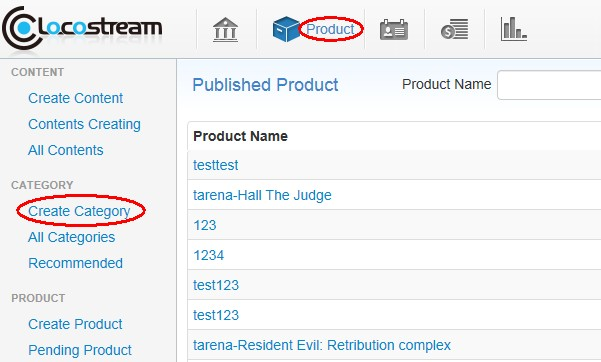
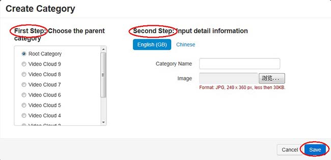
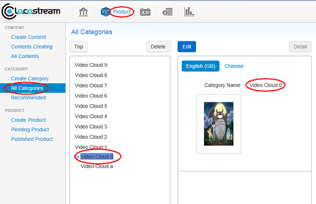
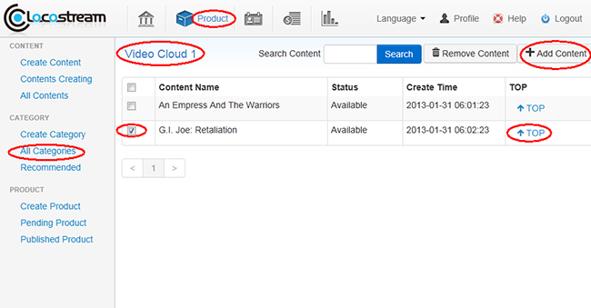
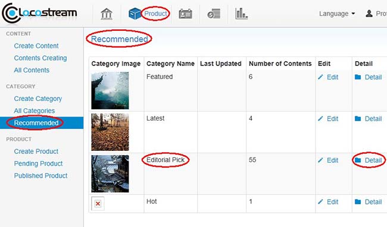

Help
Category Management
-
There are three steps to create a category, select category parent node, input category name and upload category image.
1. From the Product and click Create Category button, popping the create category dialog box;

2. Select category parent node, the default parent node is root category, all one-level categories has the common root node;
3. Input category name and upload category image, category support multi-language, then click Save and category has been created. The newly created category will be listed in the page of Category List.

Category is used to organize and manage content. The system supports two types of category: one is predefined category and the other is user-defined category. The information of predefined category is not allowed to be modified, while user-defined category is allowed to be modified.
1. Create Category-
2. Edit Category
-
We can edit the category name, sort category and adjust category hierarchy. Edit category name:
1. From the category management page, select Category List on the left which has listed all created category;

2. Selected category name needed to edit, click Detail to check the content which contained by category and click Edit to get in the page of category edit.

-
3. Delete Category
-
From the category management page, select the category and click Delete. The category selected will be deleted.
Notice: If the category planned to delete contains subcategory or contents, the category can't be deleted directly, you must firstly delete the subcategory or content and then delete the category.
-
4. Recommended
-
Recommended are predefined categories. Our system defined four recommended categories: Featured, Hot, Latest and Editorial Pick. Recommended categories are not allowed to be deleted.
